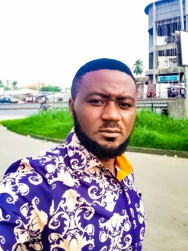

I currently reside in Bonaberi – Douala – Cameroon. Douala is the economic capital of Cameroon. It is found in the Littoral region and is one of the biggest and most populated city in Cameroon. It is also the capital of the Littoral region. It was home to Central Africa's largest port, now being replaced by Kribi port. It has the country's major international airport, Douala International Airport (DLA). Consequently, it handles most of the country's major exports, such as oil, cocoa and coffee, timber, metals and fruits. As of 2023, the city and its surrounding area had an estimated population of 5,066,000 The city sits on the estuary of Wouri River and its climate is tropical.